Abstract
The availability of high-quality paired data is essential for training learning-based image demoiréing models. However, it remains challenging for existing datasets to encompass the complex moiré patterns captured in uncontrolled real-world scenarios. Such degradations typically manifest as large-scale, multicolored moiré patterns. Moreover, these patterns frequently occur in images for which clean counterparts are difficult to obtain, such as photographs acquired from public displays or existing online resources.
We propose a data engine designed to improve the removal of complex moiré patterns by generating training supervision. We first collect real-world images containing complex moiré patterns and localize the corresponding screen regions. Multiple image-conditioned generative foundation models then produce candidate references, which are subjected to patch-level quality control to filter and select reliable supervision. Based on this paradigm, we construct WildMoiré with 6.8K moiré–GT training pairs and an independent captured test set of approximately 250 pairs. Extensive experiments on ESDNet, SDXL, and Qwen-Image-Edit show consistent improvements in complex moiré removal.
Method Overview
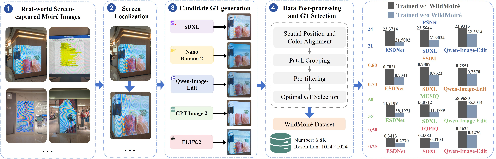
We first collect real screen-captured images containing complex moiré patterns and localize the corresponding display regions. Five image-conditioned generative models are then used to produce candidate GT images. To establish reliable supervision, these candidates are aligned with the input in spatial position and color, cropped into synchronized patches, and processed by pre-filtering and optimal GT selection. This offline construction pipeline retains high-quality local supervision and yields 6,832 moiré–GT pairs at 1024×1024 resolution. During training, scale transformation augmentation further changes the scale of moiré patterns to improve generalization across ESDNet, SDXL, and Qwen-Image-Edit.
Qualitative Results
Drag each divider to compare the moiré observation with its corresponding reference or restoration result.
Our Captured Test Set
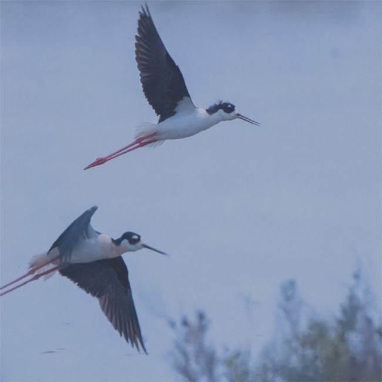
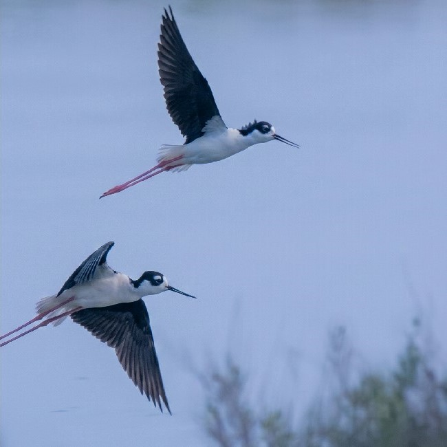
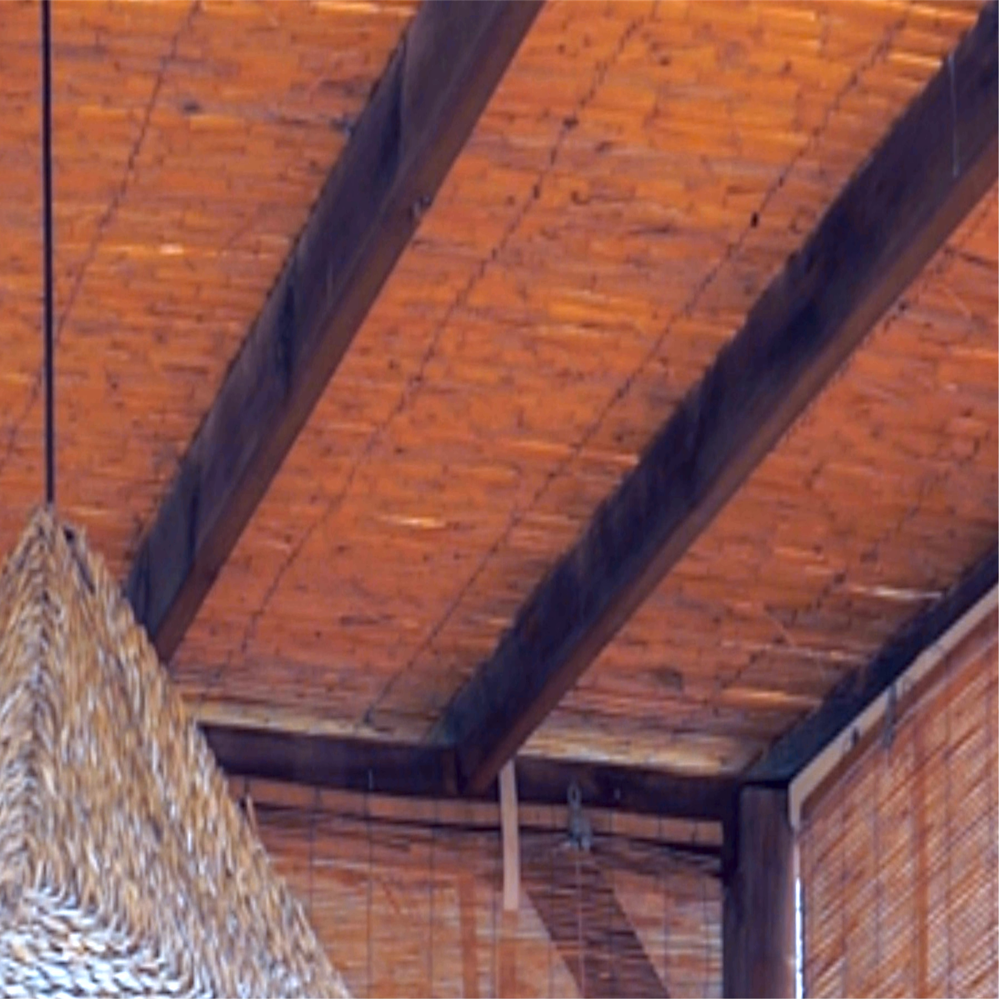
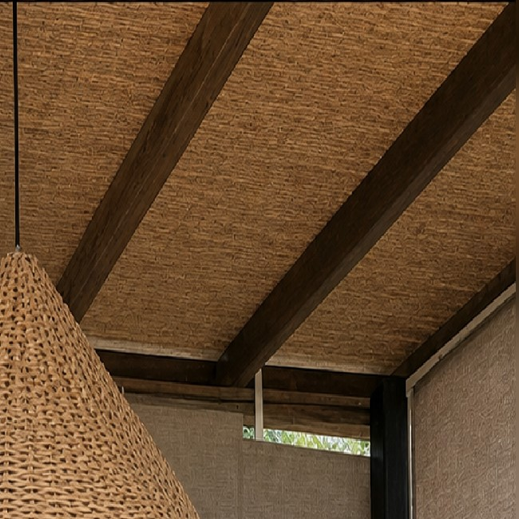
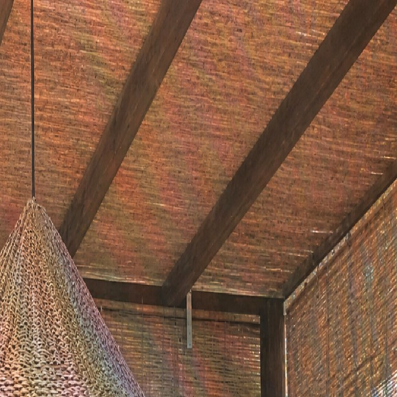
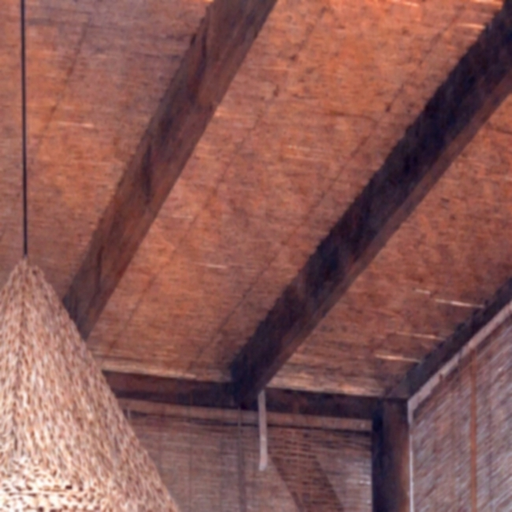
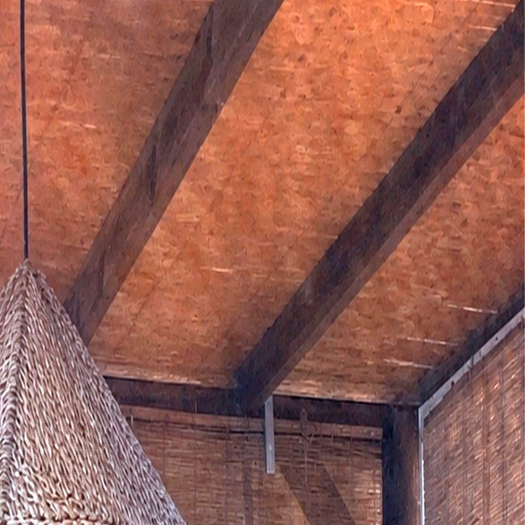
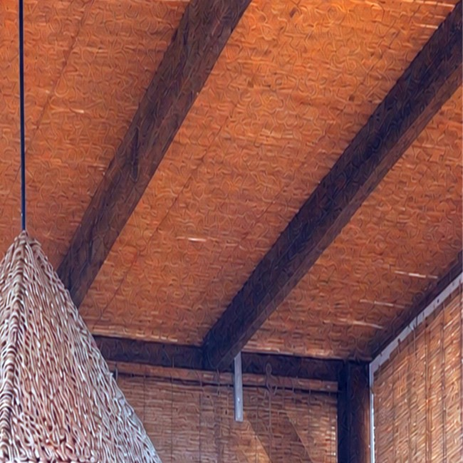
Challenging Cases from UHDM and DCID
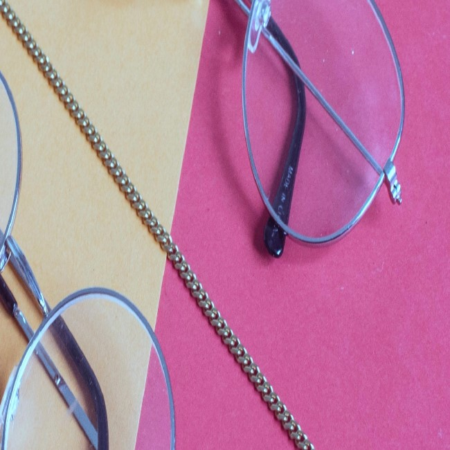
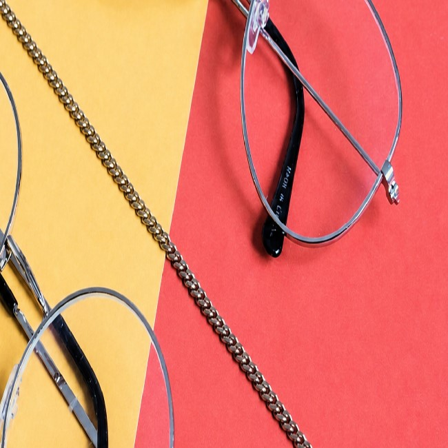
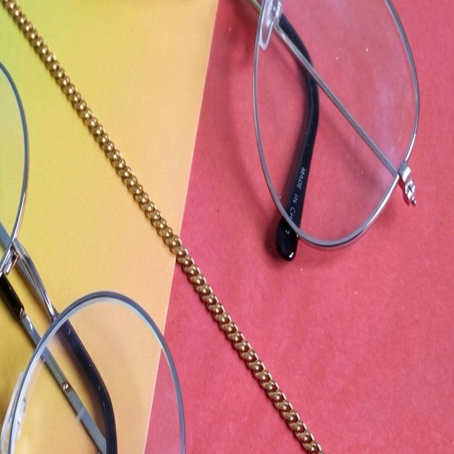
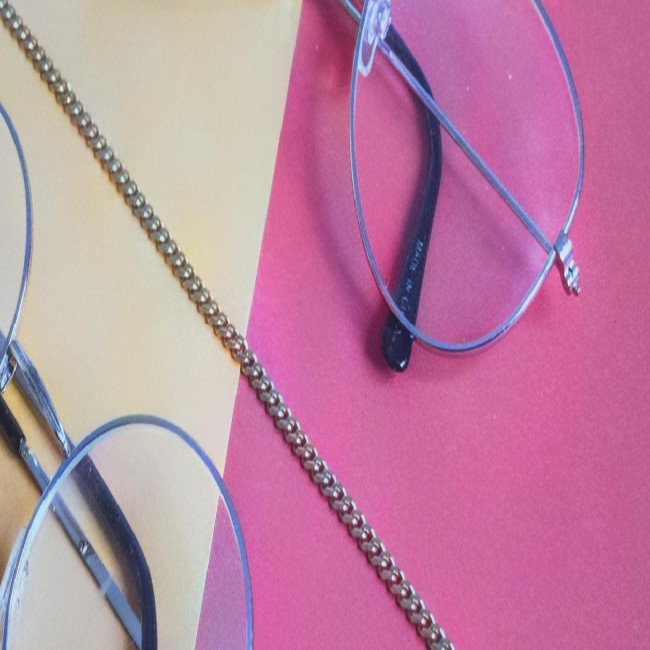
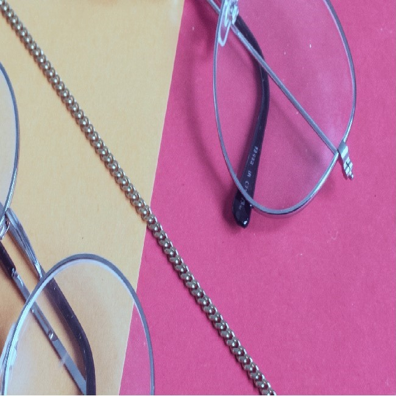
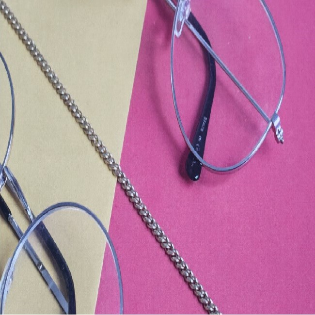
Quantitative Results
Our Captured Test Set
| Model | Training | Full-reference Fidelity Metrics | No-reference Perceptual Metrics | ||||
|---|---|---|---|---|---|---|---|
| PSNR ↑ | SSIM ↑ | LPIPS ↓ | MUSIQ ↑ | TOPIQ ↑ | Q-Align ↑ | ||
| GPT-Image-2 | — | 15.1965 | 0.5265 | 0.4636 | 65.4375 | 0.5831 | 4.3665 |
| Nano-Banana-2 | — | 16.8793 | 0.5679 | 0.4696 | 60.9621 | 0.5002 | 4.4743 |
| ESDNet | UHDM + DCID | 21.5002 | 0.7341 | 0.3471 | 38.1971 | 0.2770 | 3.6343 |
| + WildMoiré | 23.3714 | 0.7821 | 0.2614 | 44.2109 | 0.3413 | 3.9607 | |
| SDXL | UHDM + DCID | 21.9034 | 0.7522 | 0.2951 | 41.4789 | 0.3203 | 3.8128 |
| + WildMoiré | 23.5644 | 0.7887 | 0.2621 | 45.0712 | 0.3583 | 4.0811 | |
| Qwen-Image-Edit | UHDM + DCID | 22.2314 | 0.7578 | 0.3101 | 55.3314 | 0.4276 | 4.1005 |
| + WildMoiré | 23.9313 | 0.7851 | 0.2528 | 58.9680 | 0.4624 | 4.2982 | |
Challenging Cases from UHDM and DCID
| Model | Training | Full-reference Fidelity Metrics | No-reference Perceptual Metrics | ||||
|---|---|---|---|---|---|---|---|
| PSNR ↑ | SSIM ↑ | LPIPS ↓ | MUSIQ ↑ | TOPIQ ↑ | Q-Align ↑ | ||
| GPT-Image-2 | — | 16.4847 | 0.6288 | 0.3597 | 47.6108 | 0.4396 | 4.4022 |
| Nano-Banana-2 | — | 19.5363 | 0.7320 | 0.2859 | 45.6903 | 0.4112 | 4.2289 |
| ESDNet | UHDM + DCID | 26.5372 | 0.8722 | 0.2483 | 34.1202 | 0.3006 | 3.9790 |
| + WildMoiré | 26.9181 | 0.8784 | 0.2441 | 34.9631 | 0.3109 | 4.0698 | |
| SDXL | UHDM + DCID | 26.5779 | 0.8706 | 0.2467 | 36.5014 | 0.3082 | 4.0967 |
| + WildMoiré | 26.8603 | 0.8746 | 0.2458 | 37.1075 | 0.3187 | 4.1343 | |
| Qwen-Image-Edit | UHDM + DCID | 26.9703 | 0.8801 | 0.2360 | 44.7053 | 0.4118 | 4.2721 |
| + WildMoiré | 27.3071 | 0.8870 | 0.2367 | 46.8816 | 0.4174 | 4.3152 | |
Citation
@article{gu2026improving,
title = {Improving Complex Moiré Removal with Generative Supervision},
author = {Xinyang Gu and Zhilu Zhang and Honglei Xu and Yanting Mei and Yukang Ding and Wangmeng Zuo},
journal = {arXiv preprint arXiv:2608.17883},
year = {2026}
}